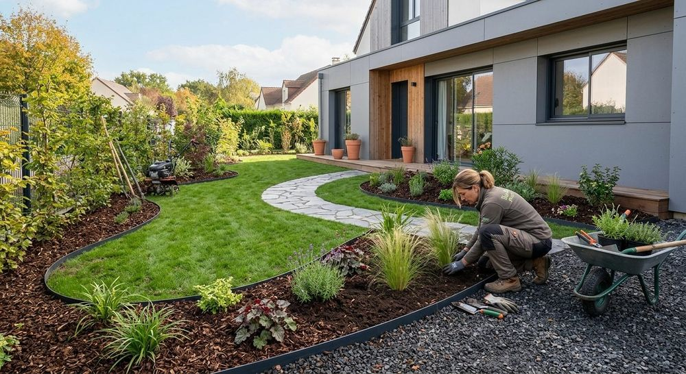
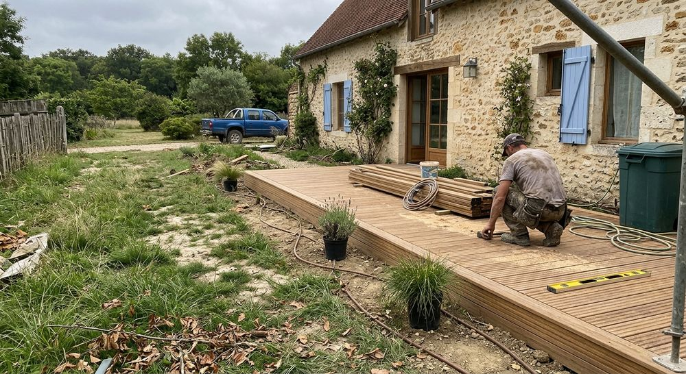
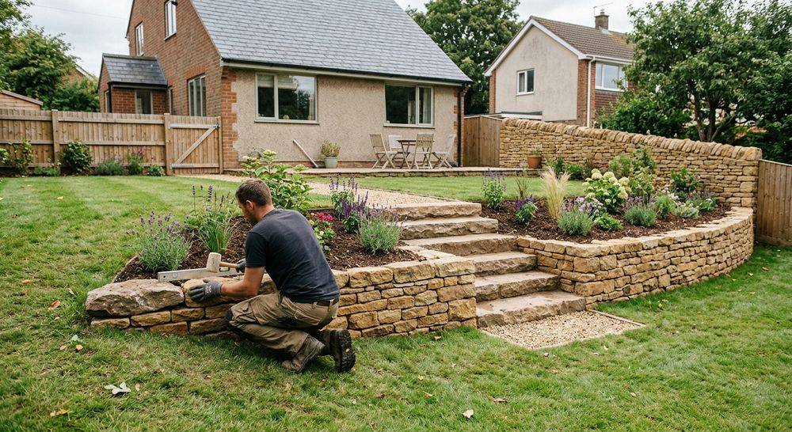
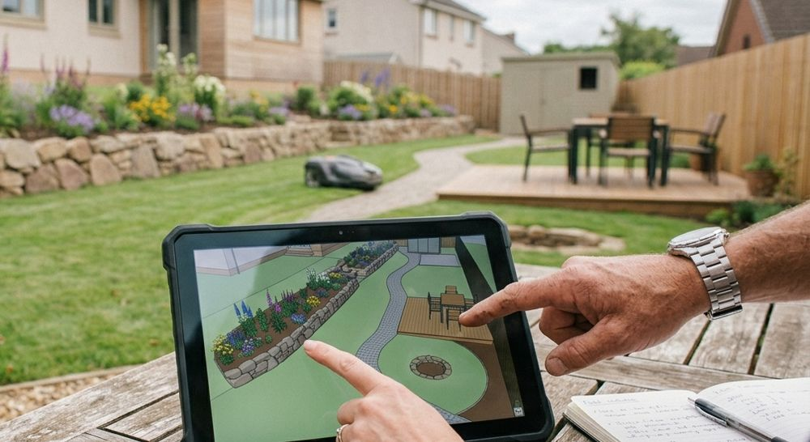
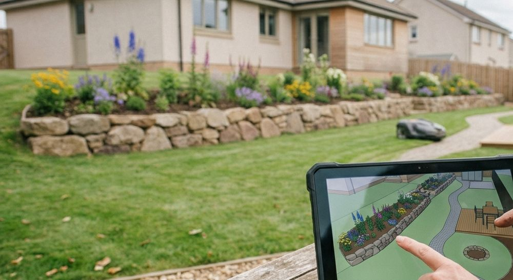
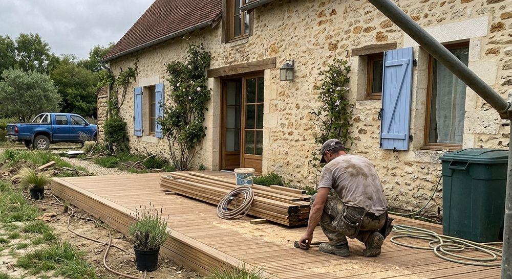
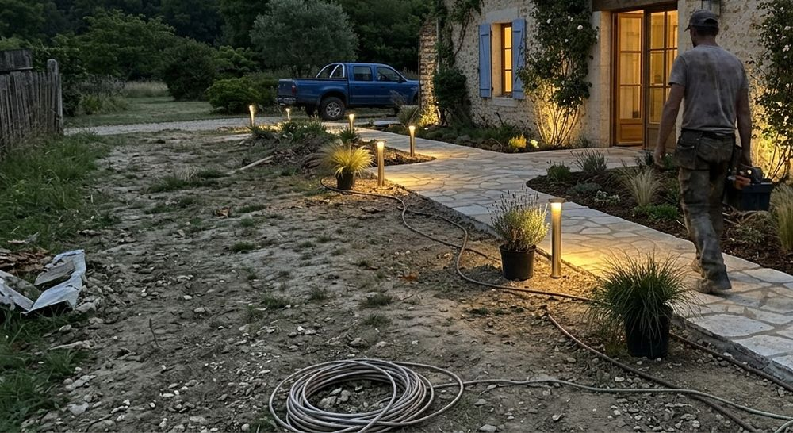
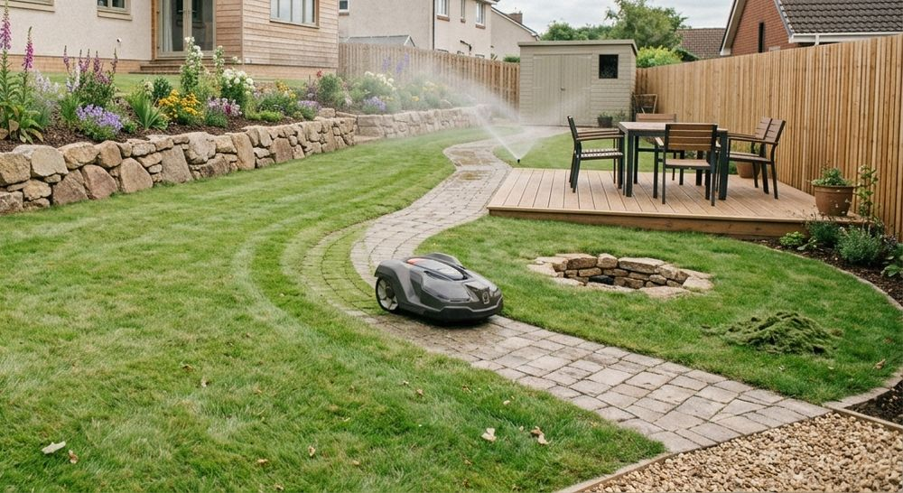
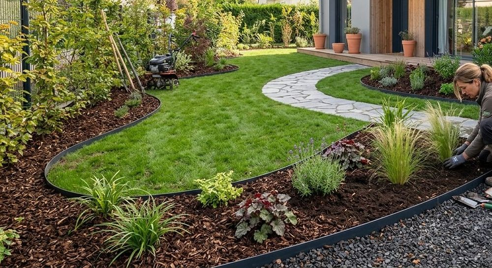

Prestations
Un jardin conçu, aménagé, entretenu
Conception, plantations, terrasses, murets et entretien : les domaines d'Espace Déco Ouest à Buc.



Créer
Conception et plantations
Un jardin pensé selon votre terrain et vos envies, puis planté : massifs, arbustes et pelouse.
- Conception du jardin
- Création de massifs
- Plantation d'arbustes


Aménager
Terrasses, allées et murets
Les ouvrages qui structurent l'extérieur : bois, dalles, pavés et pierre.
- Terrasses en bois
- Allées dallées ou pavées
- Murets et marches en pierre


Entretenir
Un jardin suivi dans la durée
Le suivi régulier qui garde pelouse et massifs en forme.
- Tonte de la pelouse
- Entretien des massifs
- Tondeuse robot


Votre projet
Parlons de votre jardin
Décrivez votre projet à Espace Déco Ouest : l'entreprise vous répond directement.
07 77 14 12 87